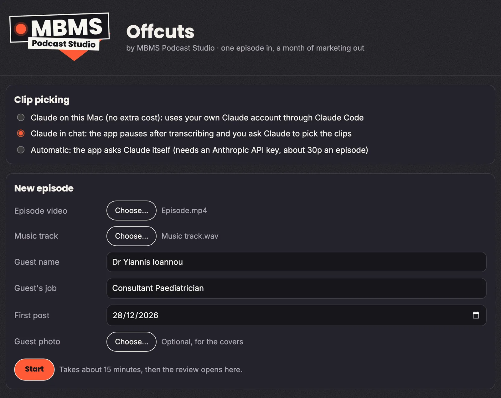
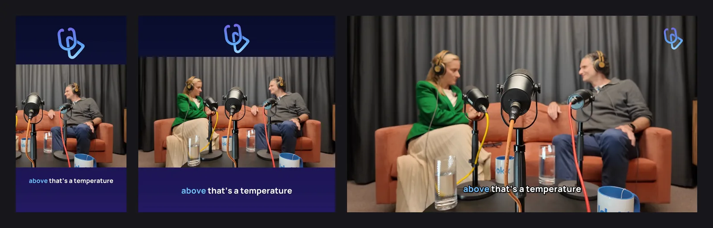
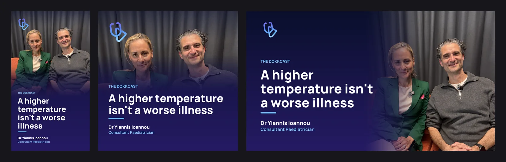
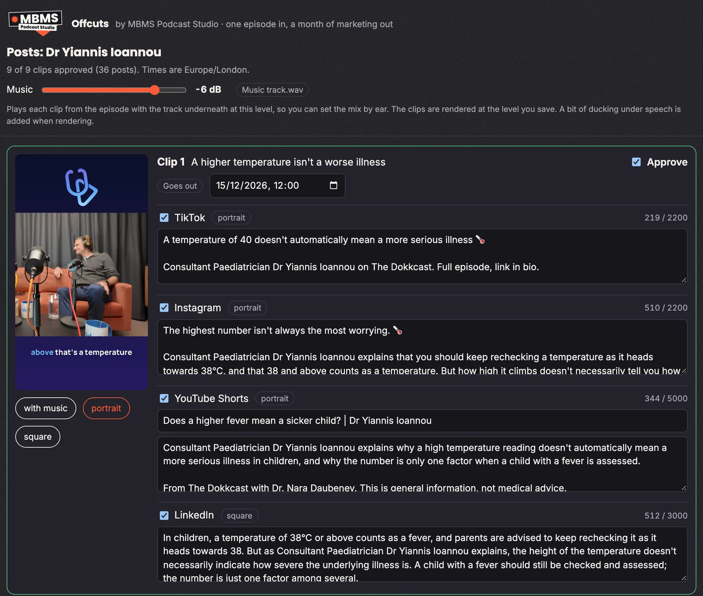
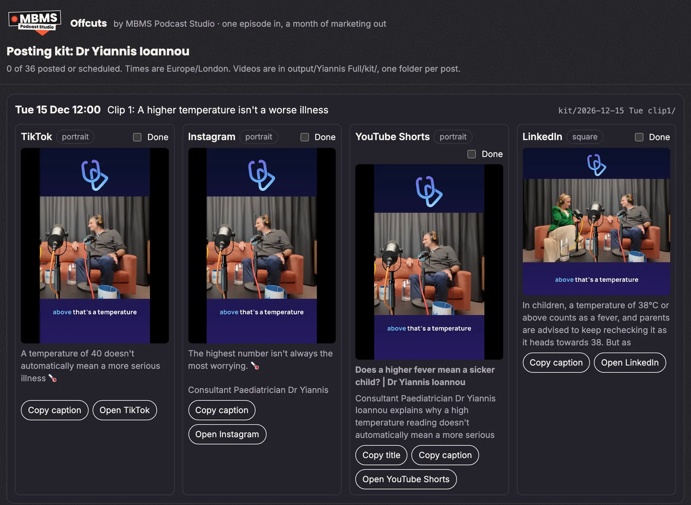

One episode in, a month of marketing out
A good podcast episode holds a month of social posts. The hard part has never been finding them. It’s the hours of cutting, captioning, resizing and checking that come after.
So we built an app to do that job. It’s called Offcuts, and it takes one finished episode and turns it into clips, captions for each channel, covers and a posting plan, with a review step in the middle so nothing goes out until a person has approved it. Here’s what that looks like, using an episode of The Dokkcast with Consultant Paediatrician Dr Yiannis Ioannou.
Step 1: one episode in
Everything starts with a short form. We add the episode video, a music track, the guest’s name and job, the date of the first post and, if we have one, a photo of the guest for the covers. Then we press Start.

Offcuts transcribes the episode, then Claude reads the transcript and suggests the moments most likely to work on their own: the kind of strong opinions, short stories and surprising facts we describe in our clip-finding checklist. About 15 minutes later, the review page opens.
Step 2: clips, with captions for each channel
For this episode, Offcuts found nine clips. Each one gets its own post for four channels, which makes 36 posts from one conversation. Every channel gets its own caption, because people use each platform differently:
- TikTok: short and direct, a hook and a pointer to the full episode.
- Instagram: a hook line, then a little more context about what the guest says.
- YouTube Shorts: a searchable title and a fuller description, so the clip can be found later.
- LinkedIn: a short written post that stands up on its own, with the clip alongside.
Each caption shows a character count against that platform’s limit, so nothing gets cut off when it’s posted.
Step 3: the right shape for every feed
Every clip is made in the shape each platform wants: portrait for TikTok, Instagram and YouTube Shorts, square for LinkedIn, and landscape when it’s needed. Captions are burned in with the word being spoken highlighted, because most people scroll with the sound off, and the show’s logo sits at the top.

Step 4: covers to match
Each clip also gets a cover in the same three shapes, with the clip’s headline, the guest’s name and their job, in the show’s own colours. They’re ready for thumbnails, carousels and anywhere a still image works better than a video.

Step 5: review, clearance and approval
This is the step that matters most, and the one we would never skip. Before any video is made, every clip and every caption appears on a single review page. Each clip has its own date and time, a tick box for each channel and an Approve box. We read every caption, edit anything that isn’t quite right, and only approved clips are made.

For a health show like The Dokkcast, this is also where we check the details that need care. In this episode, the YouTube description ends with a line saying the clip is general information, not medical advice. The review page is the point where someone checks each claim, each name and each job title before anything is made, and as the page itself says, nothing is posted from there.
Setting the music by ear
The review page also has a music slider. It plays each clip with the track underneath at the level you choose, so the mix can be set by ear rather than guessed. When the clips are made, the music dips a little under speech so the guest is always clear.
Step 6: a posting kit and calendar
Once the clips are approved, Offcuts makes the videos and covers and packs everything into a single zip to share. It also builds a posting kit: a calendar laid out day by day, with each post’s video, caption and a button to open the right app.

Posting a clip means opening the day, copying the caption, uploading the video and ticking Done. The kit keeps count of how many of the 36 posts are out or scheduled, so it’s always clear what’s left. Nine clips across four channels is enough for two or three posts a week for a month, all from one conversation.
Why we built it
Most podcasts don’t lack good moments. They lack the time to turn those moments into posts, and the clips that do go out are often one shape, one caption, posted everywhere. Offcuts does the repetitive part so our time goes on what needs a person: choosing the best moments, checking every word and making sure the guest is shown well.
Questions about a month of podcast marketing
How many posts does one episode make?
In the episode shown here, nine clips, each prepared for TikTok, Instagram, YouTube Shorts and LinkedIn: 36 posts. That is enough for two or three posts a week across a month.
Does Offcuts post to social media by itself?
No. Offcuts prepares everything and lays it out day by day, but nothing is posted from the app. A person posts or schedules each one and ticks it off.
Why does each channel get its own caption?
People use each platform differently. A TikTok caption works best short, Instagram has room for a little more context, YouTube Shorts needs a searchable title and description, and LinkedIn readers expect a short written post around the clip.
Want a month of marketing from every episode?
We record and edit podcasts in Marlow, London and on location, and turn every episode into clips, captions and covers for each channel, checked and ready to post.
Your episode brings the ideas. We handle the rest.